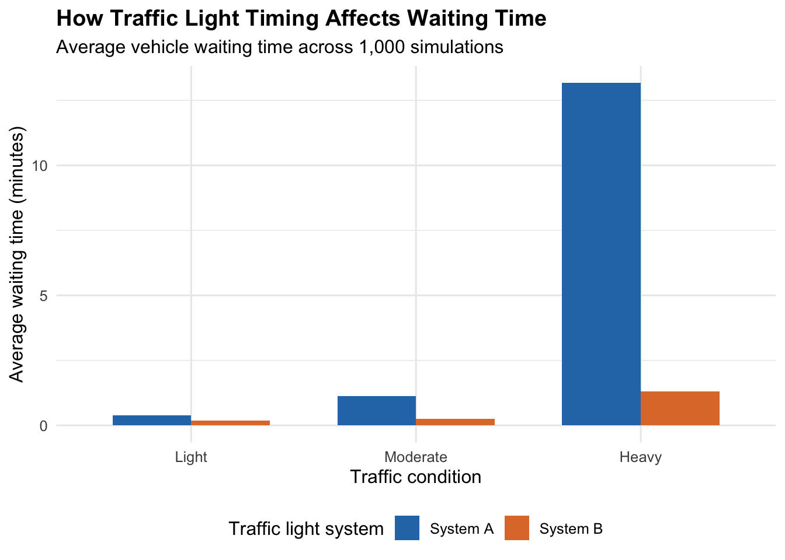
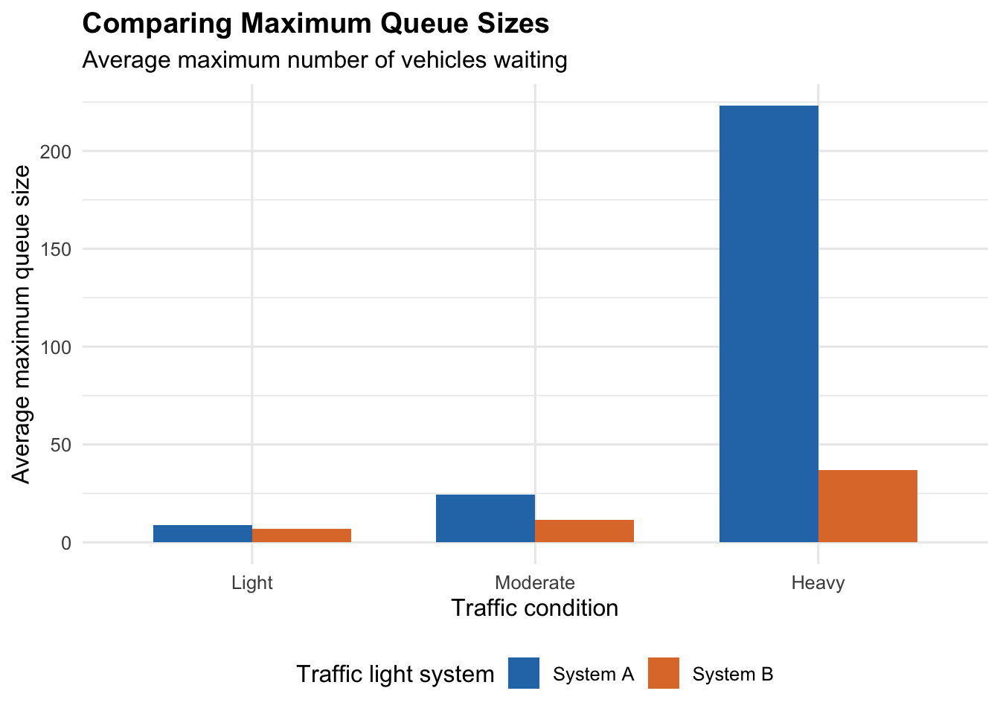

Code
library(tidyverse)
library(purrr)How Traffic Light Timing Affects Vehicle Waiting Times
El Hadji Dieye
November 16, 2026
Traffic lights help manage the movement of vehicles at busy intersections, but the amount of time allocated to red and green lights can affect how long drivers wait. In this project, I investigate how different traffic light schedules perform under light, moderate, and heavy traffic conditions. I use simulation in R to generate random vehicle arrivals, model waiting lines, and compare the average waiting times produced by two different traffic light systems.
For this study, I compare two traffic light systems that each have a 100-second cycle.
I also examine three different traffic conditions:
The research question is:
How does traffic light timing affect average vehicle waiting time under different traffic conditions?
To keep the simulation manageable, I make the following assumptions:
These assumptions allow me to compare the two traffic light schedules under the same conditions.
First, I load the packages needed for the simulation and visualization.
I create a function called simulate_traffic(). It simulates vehicle arrivals over one hour, tracks the traffic light, and calculates how long each vehicle waits before passing through the intersection.
simulate_traffic <- function(
arrival_rate,
green_seconds,
simulation_minutes = 60,
service_seconds = 3
) {
simulation_seconds <- simulation_minutes * 60
queue <- numeric(0)
wait_times <- numeric(0)
max_queue <- 0
time <- 0
next_service_time <- 0
while (
time < simulation_seconds ||
length(queue) > 0
) {
# Generate random vehicle arrivals
if (time < simulation_seconds) {
arrivals <- rpois(
1,
lambda = arrival_rate / 60
)
if (arrivals > 0) {
queue <- c(
queue,
rep(time, arrivals)
)
}
}
# Track the largest queue
max_queue <- max(
max_queue,
length(queue)
)
# Determine the traffic light position
cycle_position <- time %% 100
is_green <- cycle_position < green_seconds
# Allow one vehicle to pass every 3 seconds
if (
is_green &&
length(queue) > 0 &&
time >= next_service_time
) {
arrival_time <- queue[1]
wait_times <- c(
wait_times,
time - arrival_time
)
queue <- queue[-1]
next_service_time <- time + service_seconds
}
time <- time + 1
}
tibble(
total_vehicles = length(wait_times),
average_wait = mean(wait_times) / 60,
median_wait = median(wait_times) / 60,
maximum_wait = max(wait_times) / 60,
maximum_queue = max_queue
)
}The function returns the total number of vehicles served, their average waiting time, their median waiting time, their maximum waiting time, and the largest queue observed.
Next, I define the traffic conditions and the two traffic light systems.
traffic_conditions <- tibble(
traffic_condition = factor(
c("Light", "Moderate", "Heavy"),
levels = c("Light", "Moderate", "Heavy")
),
arrival_rate = c(4, 8, 12)
)
traffic_systems <- tibble(
system = c(
"System A",
"System B"
),
green_seconds = c(40, 60)
)
simulation_design <- tidyr::crossing(
traffic_conditions,
traffic_systems
)
simulation_design# A tibble: 6 × 4
traffic_condition arrival_rate system green_seconds
<fct> <dbl> <chr> <dbl>
1 Light 4 System A 40
2 Light 4 System B 60
3 Moderate 8 System A 40
4 Moderate 8 System B 60
5 Heavy 12 System A 40
6 Heavy 12 System B 60This creates six experimental combinations: three traffic conditions tested under two traffic light systems.
A single simulation may produce unusual results because vehicle arrivals are random. To obtain more reliable estimates, I repeat each experiment 1,000 times.
I use map_dfr() to repeat the simulation for every experimental combination and combine the results into one dataset.
set.seed(123)
n_sims <- 1000
results <- map_dfr(
seq_len(nrow(simulation_design)),
function(i) {
design <- simulation_design[i, ]
simulation_runs <- map_dfr(
seq_len(n_sims),
function(sim) {
simulate_traffic(
arrival_rate = design$arrival_rate,
green_seconds = design$green_seconds
)
}
)
simulation_runs |>
summarise(
across(everything(), mean)
) |>
mutate(
traffic_condition = design$traffic_condition,
system = design$system,
arrival_rate = design$arrival_rate
)
}
)
results# A tibble: 6 × 8
total_vehicles average_wait median_wait maximum_wait maximum_queue
<dbl> <dbl> <dbl> <dbl> <dbl>
1 240. 0.393 0.356 1.06 8.98
2 240. 0.179 0.0503 0.703 6.84
3 480. 1.13 1.09 2.84 24.5
4 480. 0.260 0.210 0.879 11.6
5 720. 13.2 13.1 26.3 223.
6 720. 1.31 1.28 3.01 36.8
# ℹ 3 more variables: traffic_condition <fct>, system <chr>, arrival_rate <dbl>The resulting dataset contains the average simulation outcomes for each traffic condition and traffic light system.
I use a bar chart to compare average vehicle waiting times across the three traffic conditions.
ggplot(
results,
aes(
x = traffic_condition,
y = average_wait,
fill = system
)
) +
geom_col(
position = "dodge",
width = 0.7
) +
labs(
title = "How Traffic Light Timing Affects Waiting Time",
subtitle = "Average vehicle waiting time across 1,000 simulations",
x = "Traffic condition",
y = "Average waiting time (minutes)",
fill = "Traffic light system"
) +
scale_fill_manual(
values = c(
"System A" = "#2878B5",
"System B" = "#E07A35"
)
) +
theme_minimal(base_size = 12) +
theme(
legend.position = "bottom",
plot.title = element_text(face = "bold")
)
I also compare the average maximum queue size under each traffic condition.
ggplot(
results,
aes(
x = traffic_condition,
y = maximum_queue,
fill = system
)
) +
geom_col(
position = "dodge",
width = 0.7
) +
labs(
title = "Comparing Maximum Queue Sizes",
subtitle = "Average maximum number of vehicles waiting",
x = "Traffic condition",
y = "Average maximum queue size",
fill = "Traffic light system"
) +
scale_fill_manual(
values = c(
"System A" = "#2878B5",
"System B" = "#E07A35"
)
) +
theme_minimal(base_size = 12) +
theme(
legend.position = "bottom",
plot.title = element_text(face = "bold")
)
The visualizations allow me to compare how different traffic light schedules perform as the number of arriving vehicles increases.
I expect System B to perform better because it provides more green-light time, allowing more vehicles to pass through the intersection. However, the difference between the systems may become more noticeable under moderate and heavy traffic conditions.
When traffic volume becomes too high relative to the intersection’s capacity, queues can grow and waiting times can increase substantially. The simulation helps demonstrate how traffic light timing and vehicle arrival rates work together to influence congestion.
The results represent a simplified intersection rather than actual measured traffic conditions.
In this project, I developed an R function to simulate vehicle arrivals, traffic light cycles, and waiting lines at an intersection. I compared two traffic light schedules under light, moderate, and heavy traffic conditions using 1,000 repeated simulations for each combination. The results allowed me to investigate how allocating more green-light time can influence average waiting times and queue sizes. Overall, this project demonstrates how simulation can help evaluate different systems and understand how random arrivals affect real-world processes.